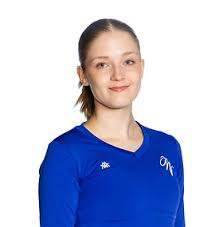

Annika Mäkipörhölä
Luokanopettajaopiskelija · Oulu, Suomi
Tietoja minusta
Olen valmistuva luokanopettaja, jolla on vahva pedagoginen osaaminen sekä kokemusta peruskoulun arjesta ja erilaisten ryhmien ohjaamisesta. Minulla on laaja digiosaaminen ja kokemusta muun muassa verkkosivu- ja sometyöstä sekä kansainvälisestä EPEP-projektista. Opin nopeasti uusia työkaluja ja haluan jatkuvasti kehittää osaamistani. Työskentelen sujuvasti itsenäisesti, mutta viihdyn myös tiimissä ja haen organisaatiota, jossa voin kasvaa pitkäjänteisesti.